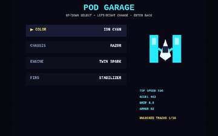

Neon Pod Rush
Top-Down Racing • Garage • 10 Tracks
Top-down hover racing with reverse-direction circuits, synchronized starting grids, longer 3–6 lap events, drift/grip physics, 10 tracks, champions and a performance garage.
▶ PLAY Neon Pod Rush NOWNeon Pod Rush is one of 106 free retro games on Retro World. It runs right in your browser on phone, tablet, PC or TV — no download or account needed, and your progress saves on your device.